1Bir bakışta
Yeni panel tıklanabilir bir tasarım taslağıdır: ekranlar çalışır, veriler örnektir. Sipariş sayıları gerçek 30 günlük dağılımdan gelir.
2Eski panelde ne vardı, şimdi ne var?
| Konu | Eski panel | Yeni panel |
|---|---|---|
| Sipariş listesi | Aynı liste beş ayrı ekranda | Tek liste, hazır görünümler |
| Sayılar | Menüdeki sayı ile liste tutmuyor | Rozet ve liste aynı hesaptan |
| Kanal sorunları | Ancak tek tek ekranlara girince görülüyor | Kanal sağlığı ve uyarılar tek yerde |
| Eksik ürün bilgisi | 43.921 resimsiz ürün, düzeltme akışı yok | "Sıradakini düzelt" kuyruğu |
| İadeler | 79 iadenin hepsi ilk aşamada | Dört adımlı iade akışı |
| Otomasyon | Birkaç sabit kural | Olay, koşul, işlem ve onay düzeyiyle kural motoru |
| Müşteri bilgisi | Sayfanın içine açık geliyor | Role göre gizli; açınca kayda geçer |
| Yardım | Yok | Soru yanıtlayan ve iş hazırlayan asistan |
| Haber verme | Sorunu görmek için ekrana girmek gerekiyor | Bildirim merkezi: yapılacaklar, sorunlar, olanlar |
| Ekip içi yazışma | Panel dışında | Ortak kanallar ve birebir mesajlar panelin içinde |
| Geri bildirim | Kayıt altında değil | Konuşmalardan beslenen geliştirme panosu |
| Ürün görseli | Listelerde çoğunlukla yok | Ürün adı geçen her listede fotoğraf |
3Yenilikler, ekran ekran
Her yeniliğin altında, eski panelde gördüğümüz hangi soruna yanıt verdiği yazıyor.
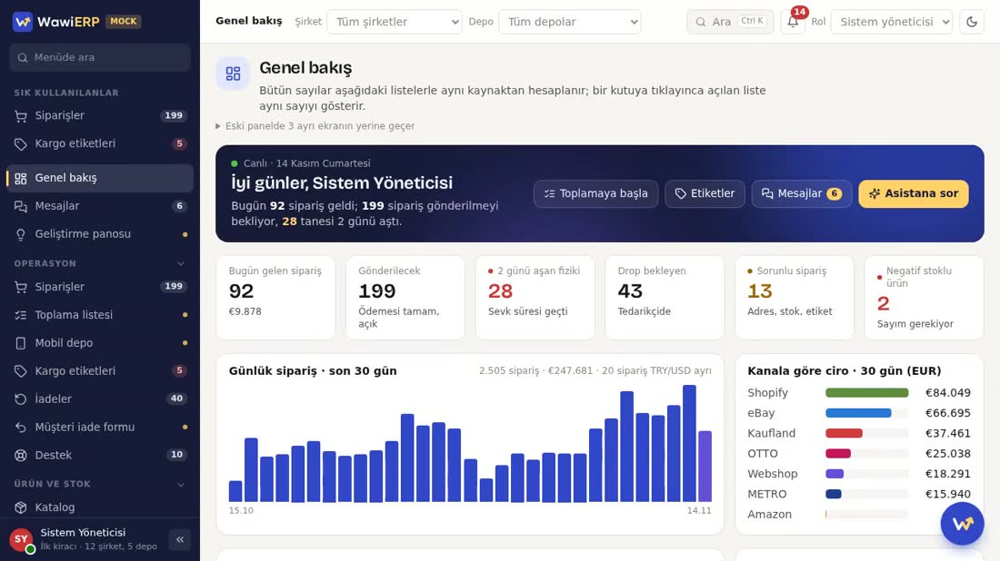
Genel bakış
- Bugünün siparişleri, gönderilecekler, geciken ve sorunlu işler tek ekranda
- Dikkat gerektiren kanal bağlantıları doğrudan görünür
- Her kutu ilgili listeye götürür
Yanıt verdiği sorun: eski genel bakışta satış özeti yüklenmiyordu.
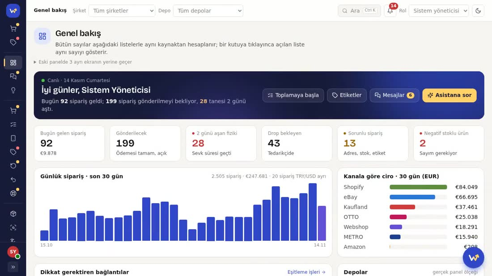
Sol menü ve karşılama şeridi
- Menü daraltılır (yalnız simge), gruplar açılıp kapanır; kapalı grubun sorun sayısı başlığında görünür
- Sık kullanılan ekranlar yıldızla üste sabitlenir; menü içinde aranır
- Genel bakışın üstündeki şerit günün durumunu tek cümleyle söyler ve hızlı düğmeler verir
Yanıt verdiği istek: daha profesyonel ve dinamik bir görünüm; 33 ekranlı menüde yolunu kolay bulmak.
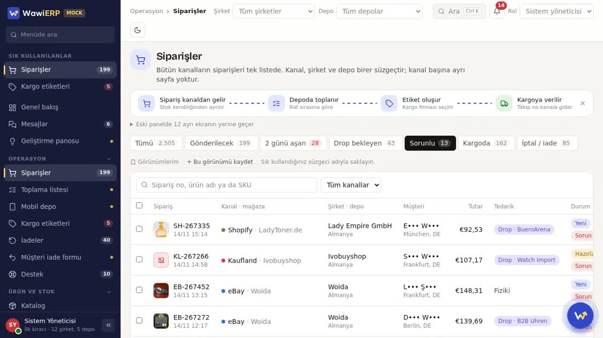
Tek sipariş listesi
- Tüm kanalların siparişleri bir arada
- Hazır görünümler: gönderilecek, 2 günü aşan, drop bekleyen, sorunlu
- Müşteri bilgisi gizli gelir; görüntülemek denetim kaydına yazılır
Yanıt verdiği sorun: aynı liste beş ekranda kopyaydı ve sayılar tutmuyordu.
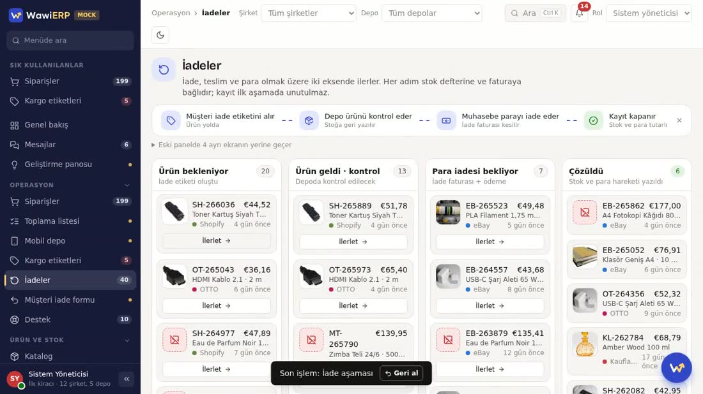
Ürün fotoğrafları ve akış şeritleri
- Ürün adı geçen her listede fotoğraf; görseli eksik ürün kırmızı kesik çizgili kutuyla görünür
- 26 ekranın başında o işin dört adımda nasıl aktığını gösteren şerit; gizlenebilir
- İadede kart ilerletilince yeni sütununda kısa bir vurguyla belirir
- Hareketler kısa ve hafiftir; "hareketi azalt" ayarında kapanır
Fotoğraflar örnektir (Wikimedia Commons, 35 adet, toplam 71 KB); gerçek sistemde satıcının kendi ürün fotoğrafı gelir.
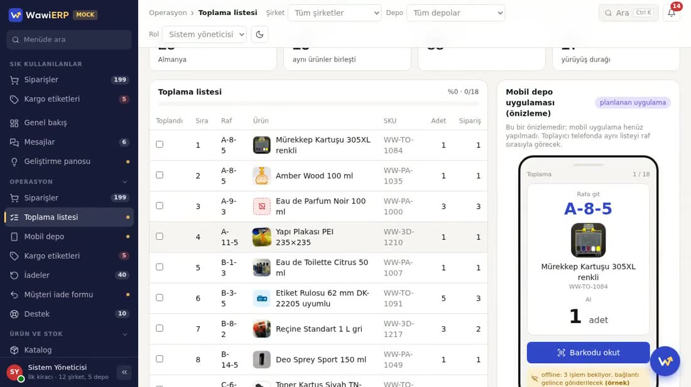
Toplama listesi ve mobil depo
- Aynı ürün tek seferde toplanır
- Satırlar raf sırasına dizilir, depoda en kısa yol yürünür
- Planlanan mobil uygulamanın önizlemesi: barkodu okut, sıradakine geç
Rakiplerde gördüğümüz: en güçlülerin hepsinde mobil toplama var.
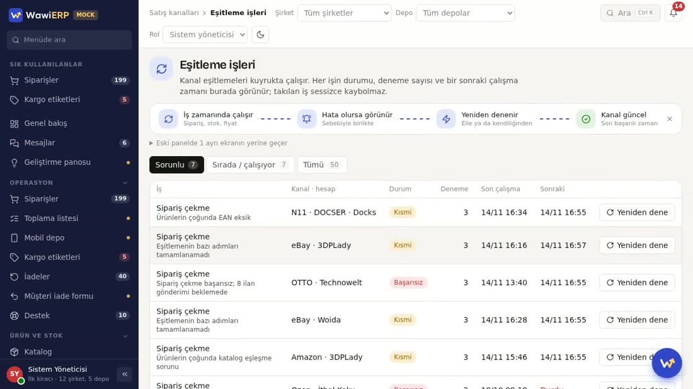
Kanal sağlığı ve eşitleme işleri
- Her hesabın son eşitlemesi ve durumu
- Başarısız iş kaç kez denendi, sıradaki deneme ne zaman
- Tek tıkla yeniden deneme
Yanıt verdiği sorun: bir kanalın eşitlemesi haftalardır yarım kalmıştı ve görünmüyordu.
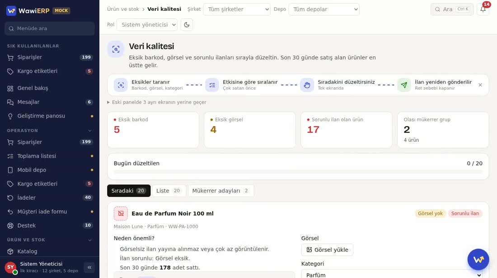
Veri kalitesi kuyruğu
- Eksik barkod ve görseller sıraya dizilir; önce satışı olanlar
- Düzelt, kaydet, sıradakine geç
- Olası mükerrer ürünler ayrı sekmede
Yanıt verdiği sorun: on binlerce resimsiz ve barkodsuz ürün.
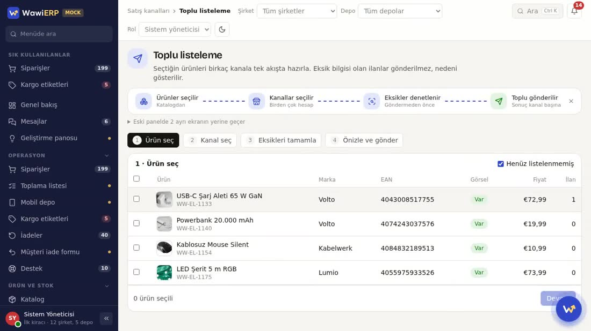
Toplu listeleme
- Ürün seç, kanal seç, eksikleri tamamla, gönder
- Her kanalın istediği bilgi ayrı gösterilir
- Eksiği olan ilan atlanır ve nedeni yazılır
Yanıt verdiği sorun: her kanal için ayrı ekran ve ayrı akış.
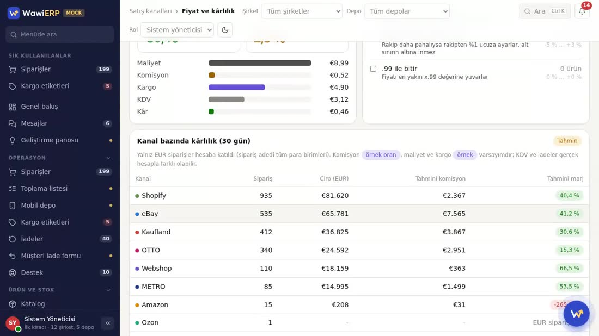
Fiyat kuralları ve kârlılık
- Komisyon, kargo ve vergi düşülünce kalan kâr
- Hedef kâr ve alt sınır fiyatı kuralları
- Kanal bazında 30 günlük kârlılık
Komisyon oranları örnektir; gerçek oranlar girilince hesap gerçeğe döner.
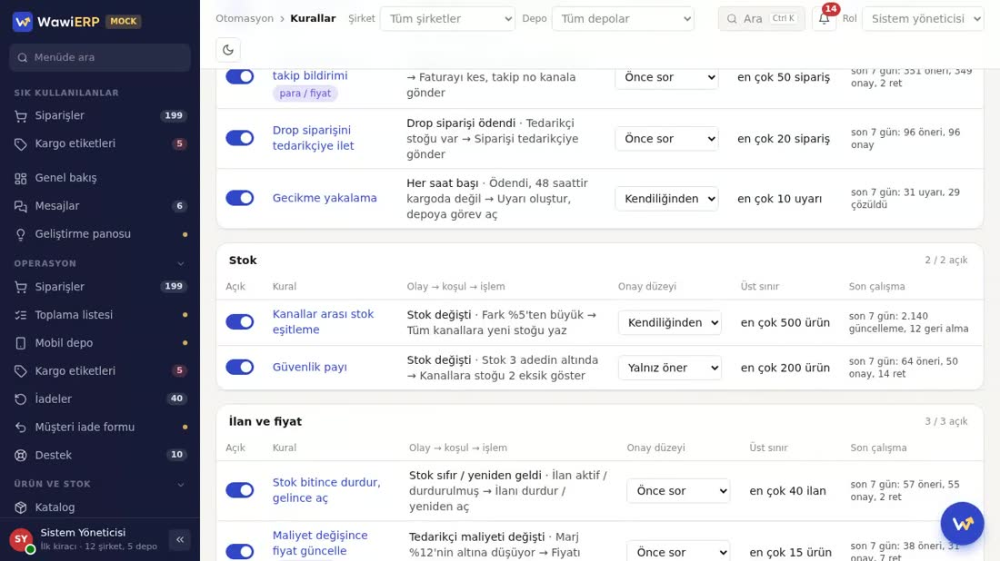
Otomasyon kuralları
- 14 hazır kural: kaynak seçimi, etiket, fatura, stok eşitleme, yeniden deneme…
- Üç düzey: yalnız öner, önce sor, kendiliğinden
- Para ve fiyat kuralları kendiliğinden düzeyine alınamaz
Rakiplerde gördüğümüz: beş güçlü rakibin hepsinde kural motoru var.
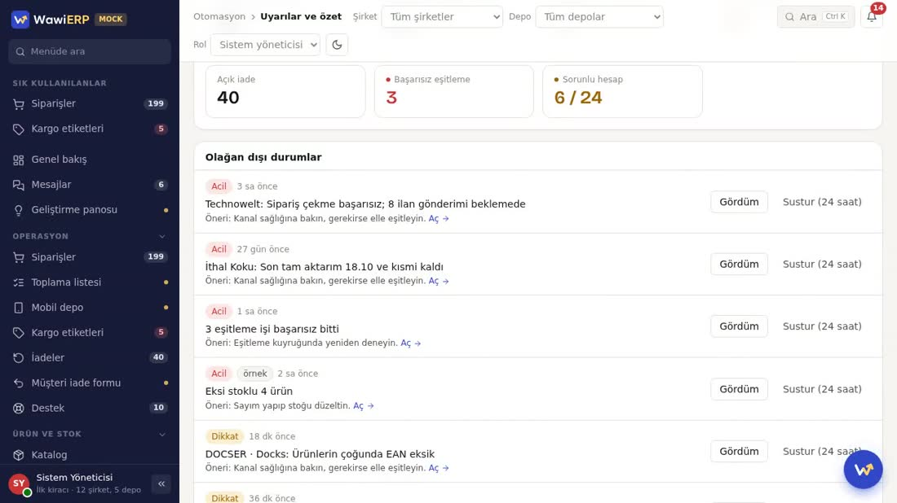
Uyarılar ve günlük özet
- Her sabah dünün özeti ve bekleyen işler
- Olağan dışı durumlar: sipariş kesilmesi, eksi stok, artan iade
- Her uyarı ilgili ekrana götürür
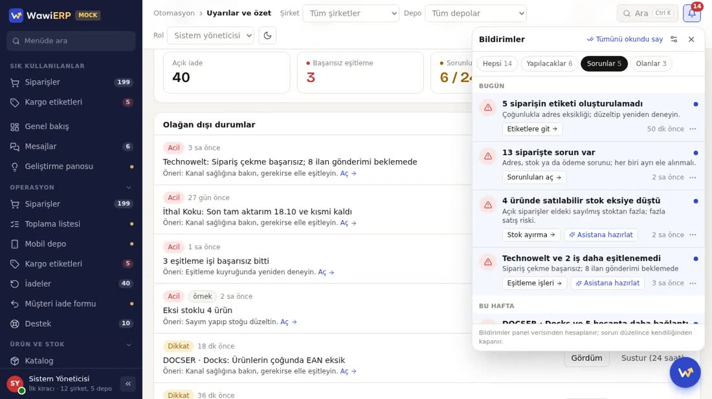
Bildirim merkezi
- Üç tür: yapılacaklar, sorunlar ve olanlar; aynı türden olaylar tek bildirimde toplanır
- Ertele, "ben alıyorum" de ya da asistana hazırlat
- Sorun düzelince bildirim kendiliğinden "Çözülenler"e geçer
- Yalnız rolünüzü ilgilendirenler görünür; müşteri adı geçmez
Yanıt verdiği istek: panel kendiliğinden "bu oldu, bu olmadı, şunu yapman lazım" desin.
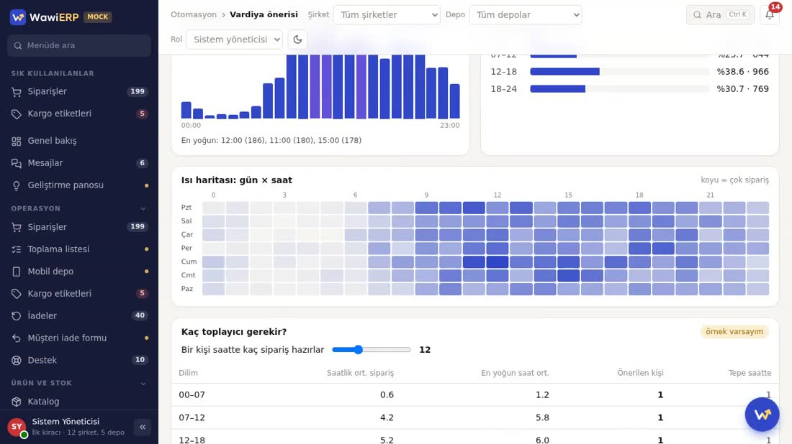
Vardiya önerisi
- Gerçek 30 günlük sipariş saatlerinden hesaplanır
- En yoğun saatler 11:00–13:00; gece 02:00–05:00 neredeyse boş
- Saat dilimine göre kaç kişi gerektiğini önerir
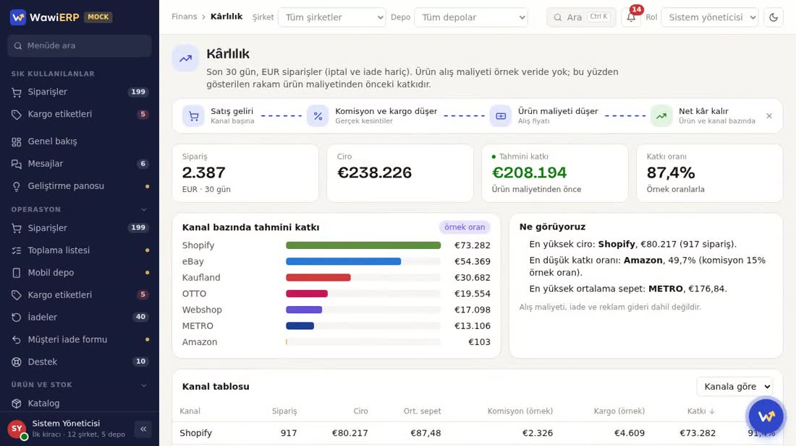
Banka mutabakatı, muhasebe, kârlılık
- Havaleler siparişlerle eşleştirilir; emin olunmayanlar onaya düşer
- Muhasebe dosyası ve yapılandırılmış e-fatura için hazırlık
- KDV şirketin ülkesine göre
Yanıt verdiği sorun: KDV özeti %19'a sabitti, ön muhasebe boş görünüyordu.
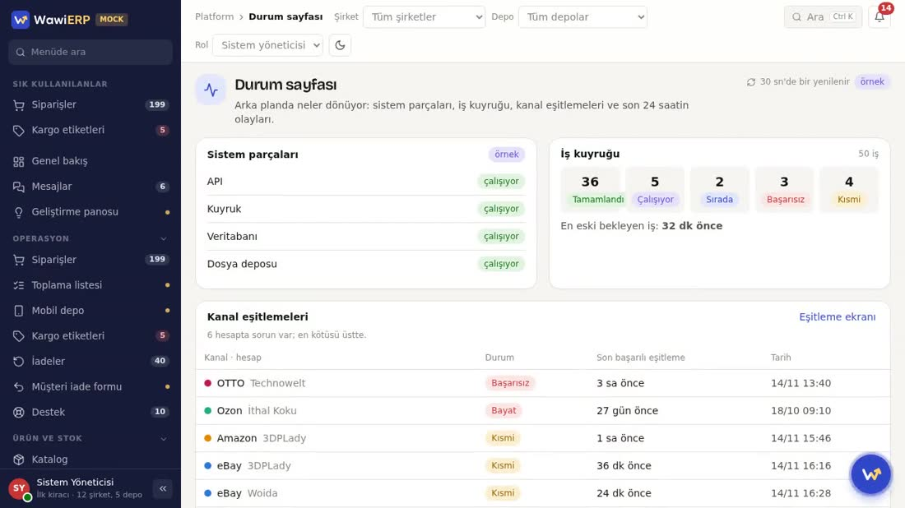
Çok müşterili ürün için
- Kurulum sihirbazı: şirket, depo, kanal, ürün aktarımı, ekip
- API anahtarları ve bildirim uçları
- Kullanım ve abonelik; arka plan işleri için durum sayfası
Plan fiyatları örnektir; abonelik altyapısı henüz kararlaştırılmadı.
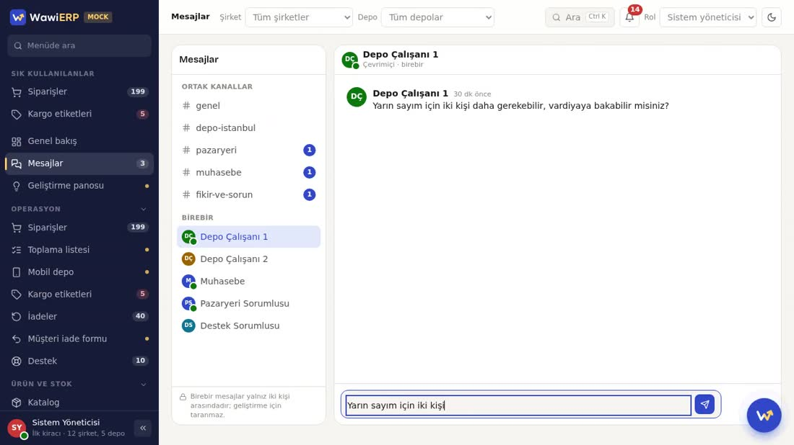
Ekip mesajlaşması
- Beş ortak kanal (genel, depo, pazaryeri, muhasebe, fikir ve sorun) ve birebir konuşmalar
- Mesaj ilgili ekrana bağlantı taşıyabilir; okunmamışlar menüde sayılır
- "@asistan" yazınca soru asistana gider
Taslakta mesajlar yalnız o tarayıcıda saklanır; kişiler arası gerçek iletim gerçek sistemde gelecek.
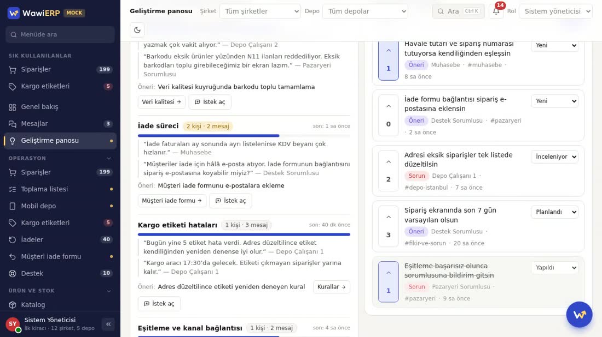
Geliştirme panosu
- Ortak kanallardaki konuşmalar konu konu sayılır: kaç kişi, kaç mesaj, örnek alıntı
- Her konu için panelde bir çözüm önerilir; tek tıkla istek açılır
- İstekler oylanır; karar verilince sonuç kanala geri yazılır
- Birebir mesajlar taranmaz
Yanıt verdiği istek: ekibin yazdıkları sistemi geliştirmek için kullanılsın.
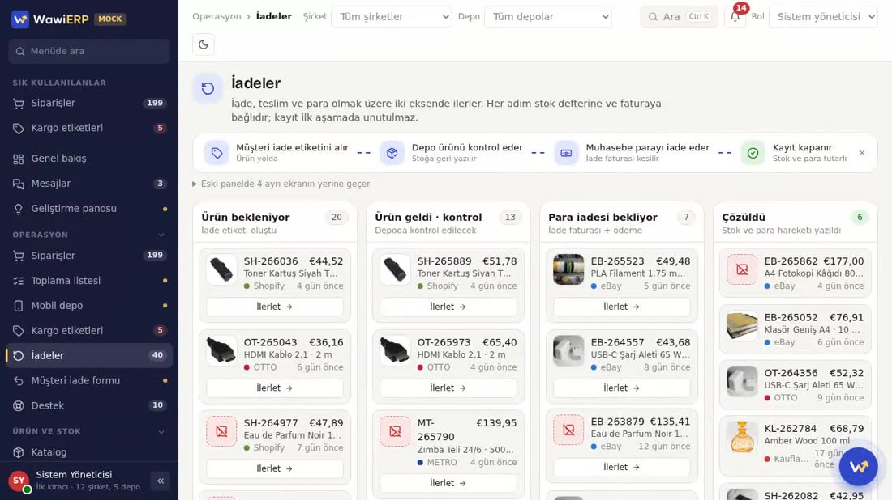
Her yerden arama
- Ctrl K ile açılır
- Ekran adı, hazır görünüm, sipariş numarası ya da ürün
- Ok tuşlarıyla gez, Enter ile aç
4Asistan
Sağ alt köşedeki W düğmesiyle bir sohbet penceresi olarak açılır; büyütülüp küçültülür. İki iş yapar: soru yanıtlar ve iş hazırlar. Hiçbir şeyi siz onaylamadan değiştirmez.
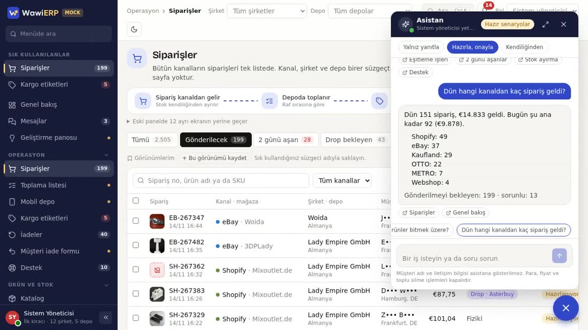
Soru sorarsınız
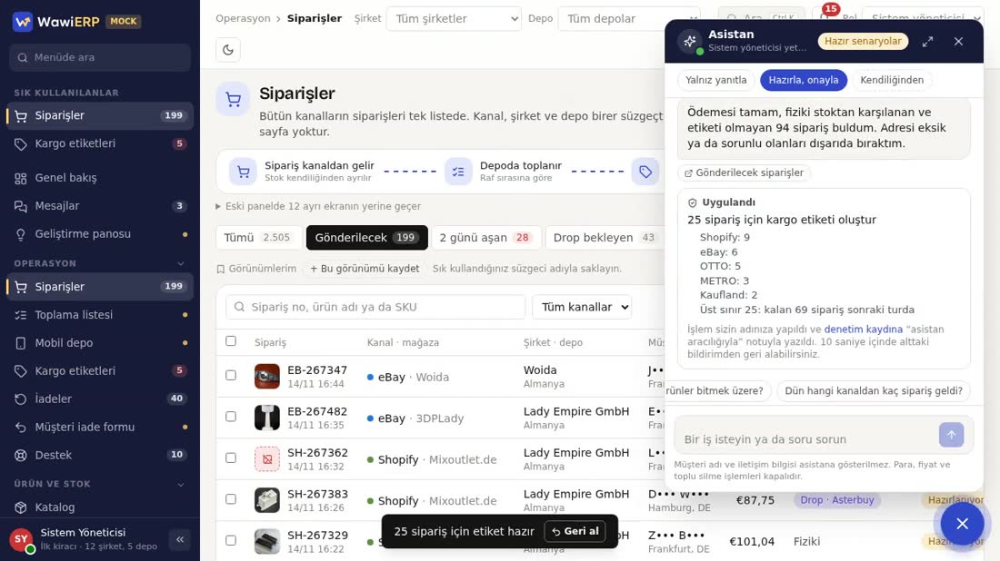
İş istersiniz
Sınırları
Canlı panelde yapay zekâ anahtarı tanımlı; asistan orada gerçek yapay zekâyla yanıt veriyor. Anahtar yoksa hazır senaryoları kullanır. Videodaki kayıt hazır senaryolarla alındı.
5Ne hazır, ne değil?
| Parça | Durum | Açıklama |
|---|---|---|
| Panel ekranları | Çalışıyor | 33 ekranın hepsi tıklanabilir; veriler örnek. |
| Asistan, hazır senaryolar | Çalışıyor | On senaryo denendi. |
| Asistan, gerçek yapay zekâ | Canlıda bağlı | Anahtar tanımlandı; canlıda soru yanıtladığı görüldü. İş hazırlama ve onay kartı canlıda ayrıca denenmedi. |
| Açık tanıtım sayfası ve şifreli panel | Yayında | Bu sayfadaki bütün ekranlar yayında. |
| Bildirim merkezi | Çalışıyor | Panel verisinden hesaplanır. Tarayıcı bildirimi, e-posta özeti ve mobil bildirim yok. |
| Ekip mesajlaşması ve geliştirme panosu | Taslak | Mesajlar tarayıcıda saklanır, başka kullanıcıya gitmez. Konu çıkarımı anahtar kelimeyle; gerçek sistemde asistan yapacak. |
| Ürün fotoğrafları | Örnek | Ürün türünü gösteren açık lisanslı fotoğraflar; gerçek ürünlerin fotoğrafı değil. |
| Gerçek sunucu ve veritabanı | Yok | Teknoloji kararları verildi; geliştirme eski kaynak kodun gelmesini bekliyor. |
| Pazaryeri bağlantıları | Yok | Taslakta gönderilen hiçbir ilan ya da etiket gerçek değil. |
| Mobil uygulama | Önizleme | Yalnız ekran tasarımı var. |
Örnek değerler ekranlarda "örnek" rozetiyle işaretli: komisyon oranları, plan fiyatları, kural çalışma sayıları, muhasebe hesap numaraları.
6Sıradaki adımlar
Bizden
- Asistanın iş hazırlama ve onay akışını canlıda denemek
- Mesajlaşmayı gerçek sunucuya bağlamak: kalıcı kayıt, anlık iletim
- Geliştirme panosunda konu çıkarımını asistana vermek
- Eski kaynak kod gelince iş kurallarını çıkarmak
Sizden
- Eski kaynak kodu ve veritabanı yapısı
- Birebir mesajların taranmaması kararının onayı
- Gerçek komisyon oranları ve KDV kuralları
- Hangi rol neyi görmeli: ekip için rol listesi
7Tanıtım videosu
Panelde gezerek yenilikleri anlatan, Türkçe seslendirilmiş yaklaşık dört dakikalık video.
Video bu sayfayla aynı klasördeki wawierp-tanitim.mp4 dosyasından oynar; sayfayı başka bir yere taşırsanız videoyu ve img klasörünü de birlikte taşıyın. Ses bilgisayarda üretilmiş sentetik bir sestir. Kayıt tasarım taslağından alındı; ekrandaki veriler örnektir.